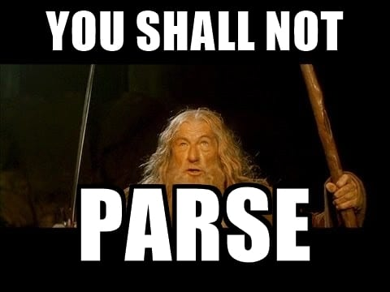

It's not easy. It is recommended to solve all of the "Classic" set and "Teukon" set in the Regex Golf website first. They are more friendly. You might also submit your solutions to SPOJ so that I can keep track of your progress.
I couldn't find a good instruction for regex (especially ECMAScript subset) but here's one that include everything you will need. And here's a thorough introduction in Chinese, which I think is very good. It took me about 30 minutes to learn regex every time I need to use it.
Unfortunately there isn't one on Stackoverflow.com
Have you finished the regex golf? xkcd also has one for it:

Regex Golf by xkcd is licensed under CC BY-NC 2.5
The author got distracted by this while preparing his 78th 'What if?' post (which was published one day after this comic).
I wish you could master this powerful and effective tool and make full use of it in the future.

11th Grade by xkcd is licensed under CC BY-NC 2.5
Perl is a scripting language that makes heavy use of regular expressions by the way.
If you really cannot solve this, finish at least 15 of regex golf without cheating, and I will give you some tips.
